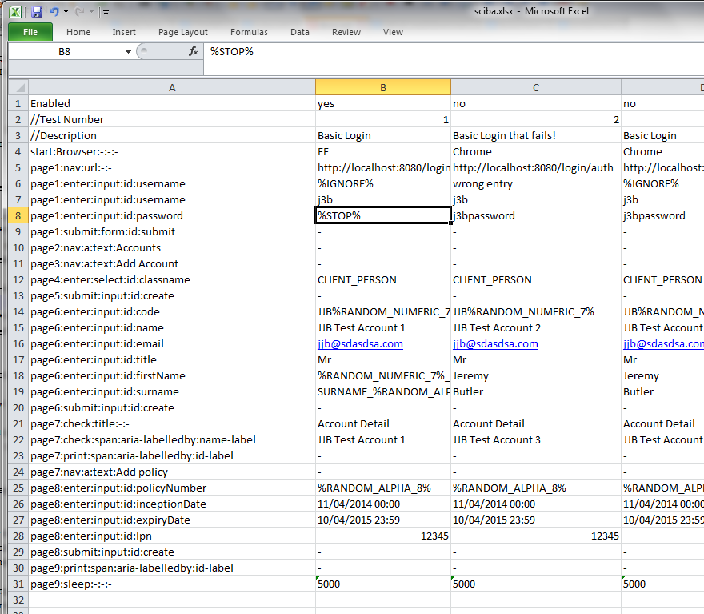
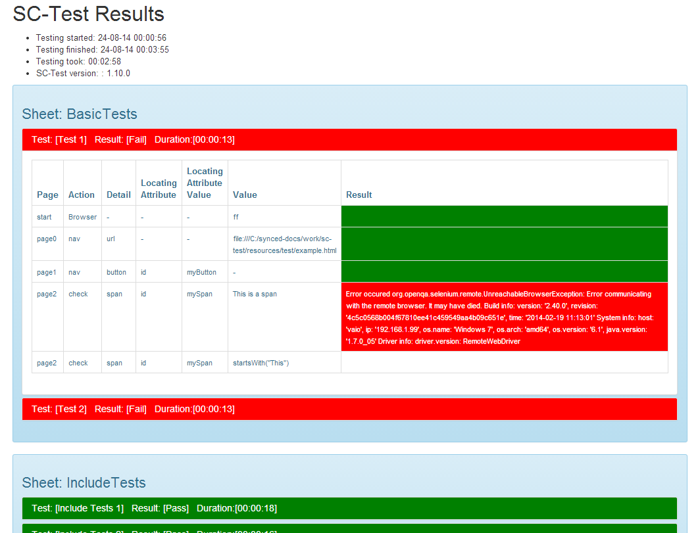
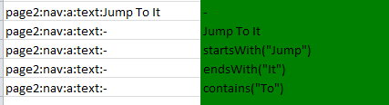
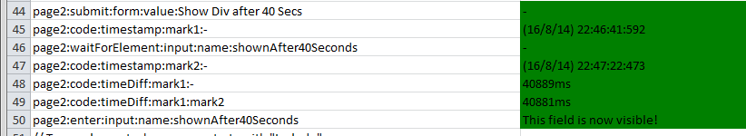

SC-Test - Quick Start Guide
Version 1.11
Example Test Sheet:

The Basics - Structure
- Define your Tests in a Sheet in an Excel file
- A Sheet uses the first column to define the Test Steps as a series of actions to perform in executing the Test
- Tests or test iterations are then defined in the subsequent columns to the right of the Test Steps and define values to be used for each Test Step
- You can use multiple Sheets to add structure to your tests. E.g. "Happy Days Paths", "Error Cases", etc
Test Execution
- Tests are executed sequentially reading tests in each tab and then in each column left to right
- Following execution an HTML output file is created showing the results of the tests which includes:
- A Global summary showing start and end time and duration of the set of tests executed
- A per test summary giving overall result and duration
- A color coded breakdown of the individual test steps
- Green Cells - have executed successfully
- Red Cells - have failed and caused the remainder of that test to be skipped
- In addition screenshots of the state of the browser at the time a test failed are provided for analysis
Example Results Sheet

The Basics
- Enabled The first row always defines whether the test should be run or not allows tests to be commented out easily: [true|false]
- Commenting Steps Steps whose name starts with a
//are ignored at execution time - these allow you to add columns for commenting your tests - Commenting Sheets/Tabs Whole sheets (tabs) can be disabled by commenting out the sheet by simply prefixing the sheet name with a
-- - Recommended rows It is recommended to include a
NameandDescription rowat the top of your file. These will be ignored but help make scripts understandable - Excel Built in Formulas Sc-Test supports the use of most common Excel built in Formulas (via the apache POI library) for an indication of the formulas supported see: http://poi.apache.org/spreadsheet/eval-devguide.html#appendixA
Test Steps
Steps follow the form:
page : action : detail : locatingAttribute : locatingAttributeValue
(Note the above includes spaces for illustration only)
e.g. homePage:nav:link:href:/account/list or page6:enter:input:id:title
- The elements to a step are separated by the
:character and define what sort of Web Element is to be used in the Test Step and what action should be taken. - The Page attribute is arbitrary and for reference purpose only its recommended to use meaningful Page Names such as "homePage" or loginPage.
- Other Element are discussed in the following sections
Creating a browser
To start, create a browser to run your tests:
| start:Browser:-:-:- | ff |
- Value: define the browser you want to test against options are
[ff, chrome, ie] - Action: Browser
- Detail: -
- Locating Attribute: -
- Locating Attribute Value: -
Navigation
Go to a defined URL
| homePage:nav:url:-:- | http://my.site.com |
- Value: any valid URL
- Action:
- nav - default
- nav_confTrue - expects a confirmation popup and confirms
- nav_confFalse - expects a confirmation popup and declines
- Detail: url
- Locating Attribute: -
- Locating Attribute Value: -
Click on a button
==NOTE: this is for html elements that start <button as opposed to elements that start input for the latter see the section on form submission==
| homePage:nav:button:id:Login | - |
- Value:
- - Action:
- nav - default
- nav_confTrue - expects a confirmation popup and confirms
- nav_confFalse - expects a confirmation popup and declines
- Detail: button
- Locating Attribute: Any attribute of the
<button>web element - Locating Attribute Value: Value of the attribute specified in
Locating Attribute
Click on a hyperlink
Example selecting link by attribute "href":
| homePage:nav:a:href:/accounts/create | - |
Example selecting link by text of link:
| homePage:nav:a:text:Accounts | - |
Example of selecting a link by variable text
| homePage:nav:a:text:- | $LINK_TEXT |
- Value, either:
-- The text of the link (can be populated via a variable)
- Part of the text of the link when using:
- startsWith("My Link Text Starts Like...")
- endsWith("...and Ends Here")
- contains("the middle")
Action:
- nav - default
- nav_confTrue - expects a confirmation popup and confirms
- nav_confFalse - expects a confirmation popup and declines
Detail: a
- Locating Attribute: Any attribute of the
<a>web element ORtext - Locating Attribute Value: Value of the attribute specified in
Locating Attributeor the text of the link where text is used as theLocation Attributeor-where link text is specifed in Value
Further Examples

Working with Forms
Input fields:
| //Basic text entry | - |
| homePage:enter:input:id:username | myUserName |
| //Clear the field first and then set the text | - |
| homePage:enter:input:id:age | %BLANK% |
| homePage:enter:input:id:age | 35 |
- Value, either:
- text to be entered into the form element. Ensure in Excel the format of the cell is set to
text - any variable in the for
$MY_VARtypically set by a print Test Step - %BLANK% to blank out the contents of the input field
- text to be entered into the form element. Ensure in Excel the format of the cell is set to
- Action: enter
- Detail: input
- Locating Attribute: Any attribute of the
<input>web element - Locating Attribute Value: Value of the attribute specified in
Locating Attribute
Text Areas:
| homePage:enter:textarea:name:address | 10,School Lane |
- Value, either:
- text to be entered into the form element. Ensure in Excel the format of the cell is set to
textline breaks can be included - any variable in the for
$MY_VARtypically set by a print Test Step - %BLANK% to blank out the contents of the input field
- text to be entered into the form element. Ensure in Excel the format of the cell is set to
- Action: enter
- Detail: textarea
- Locating Attribute: Any attribute of the
<input>web element - Locating Attribute Value: Value of the attribute specified in
Locating Attribute
Select fields:
| homePage:enter:select:id:salutation | Dr |
- Value, either:
- needs to specify the exact text of
valueattribute for the required entry in the select box. Note this may be different from the visible form - any variable in the for
$MY_VARtypically set by a print Test Step
- needs to specify the exact text of
- Action: enter
- Detail: select
- Locating Attribute: Any attribute of the
<select>web element - Locating Attribute Value: Value of the attribute specified in
Locating Attribute
Radio Buttons:
| homePage:enter:radio:name:myRadioButton | Coffee |
- Value, either:
- needs to specify the exact text of
valueattribute for the radio button required - any variable in the for
$MY_VARtypically set by a print Test Step
- needs to specify the exact text of
- Action: enter
- Detail: radio
- Locating Attribute: name
- Locating Attribute Value: Value of the name attribute
Check Boxes:
| homePage:enter:checkbox:name:hasCar | true |
- Value, either:
- specify the exact text of
valueattribute for the check box - any variable in the for
$MY_VARtypically set by a print Test Step
- specify the exact text of
- Action: enter
- Detail: checkbox
- Locating Attribute: name
- Locating Attribute Value: Value of the name attribute
Submitting Form / Clicking an <Input button:
| homePage:submit:form:name:new | - |
- Value:
- - Action:
- submit - default
- sbmit_confTrue - expects a confirmation popup and confirms
- submit_confFalse - expects a confirmation popup and declines
- Detail: form
- Locating Attribute: Name of the attribute to identify the element in question
- Locating Attribute Value: Value of the location attribute
Checking values:
Used to assert that an expected value is actually present in a given web element.
| homePage:check:span:id:totalChargeable | 512.76 |
Value:
- The expected value OR
- Part of the text of the link when using:
- startsWith("My Link Text Starts Like...")
- endsWith("...and Ends Here")
- contains("the middle")
Action: check
- Detail: any of the following elements:
- input
- select
- textarea
- checkbox
- title
- span
- div
- th
- td
- legend
- Locating Attribute: Name of the attribute to identify the span in question
- Locating Attribute Value: Value of the location attribute
Further Examples

Capturing values:
Captures the value from a web element and write to Results file and or variable for use elsewhere
| homePage:print:span:id:PolicyReference | - |
Or if you wish to record the output to be used pragmatically later on in the test....:
| homePage:print:span:id:PolicyReference | $POLICY_REFERENCE |
- Value: - OR
$varNameto store the captured data into the variable$varName. Note stored variables are typically used in data entry steps - Action: print
- Detail: any of the following element names:
- span
- div
- th
- td
- legend
- input
- select
- textarea
- Locating Attribute: Name of the attribute to identify the element in question
- Locating Attribute Value: Value of the location attribute
OR- to locate elements by XPath
- Locating Attribute: xpath
- Locating Attribute Value: the value of the xpath of the element to be captured
| homePage:print:td:xpath://*[@id="Name_ileinner"] | $POLICY_REFERENCE |
Variables
Variables are denoted by $MY_VAR notation
Typically the are created via the use of print Test Steps and used in input steps instead of literal values. See details of these steps for more details
Local Variables
The scope of variables is at Test level.
Note that variables can also be manually set via the following
| homePage:code:setVar:$MY_VAR:- | 554tTTK |
- Value: the String value of the variable being set (note double quotes should not be used)
- Action: code
- Detail: setVar
- Locating Attribute: name of the variable to set including the leading $ e.g. SMY_VAR
- Locating Attribute Value: Value of the name attribute
Global Variables
The scope of variables is at Sheet level to allow variables to be shared across different tests if need be. However note that best practise, when possible, is to make sure tests do not have dependencies on other tests and therefore sharing variables across tests is not recommended.
Note that variables can also be manually set via the following
| homePage:code:setGlobalVar:$MY_VAR:- | 554tTTK |
- Value: the String value of the variable being set (note double quotes should not be used)
- Action: code
- Detail: setGlobalVar
- Locating Attribute: name of the variable to set including the leading $ e.g. SMY_VAR
- Locating Attribute Value: Value of the name attribute
Javascript
This allows you to execute arbitrary javascript code when required
| homePage:javascript:-:-:- | document.getElementById("productName").value=’Photoguard’ |
- Value: any standard javascript
- Action: javascript
- Detail: -
- Locating Attribute: -
- Locating Attribute Value: -
Waiting
Waiting For Elements to be Visible and Enabled
** NB this has a timeout period of 120 seconds unlike all other steps which timeout if not completed after 30 seconds. If for some reason the 120 seconds is not enough a timeout value could be specified (see example below)
| homePage:waitForElement:div:id:myDelayedDiv | - |
- WaitForElement with 180 seconds wait
| homePage:waitForElement:div:id:myDelayedDiv | 180 |
- Value: -
- Action: waitForElement
- Detail: type of element you are waiting to be displayed and enabled e.g.
- Div
- Input
- Button
- Span
- Locating Attribute: Any attribute of the element used to identify the element in question
- Locating Attribute Value: value of the element specified in Locating Attribute
Waiting for Ajax requests to complete
Waits for any remaining ajax activities going on on the page before proceeding. Preferable to sleep!
| homePage:waitForAjax:-:-:-: | - |
- Value: -
- Action: waitForAjax
- Detail: -
- Locating Attribute: -
- Locating Attribute Value: -
Waiting for defined periods - Sleeps
Simply pauses the execution of the test steps for a defined period
| page3:sleep:-:-:- | 2000 |
- Value: number of milliseconds to wait for
- Action: sleep
- Detail: -
- Locating -
- Locating -
Timing
Recording Timestamps and Durations
You can add a named timestamps at any point in your test execution. These are written to the output file. In addition you can calculate the difference between two timestamps with the timeDiff test step. See examples below:

Timestamp
- Value: -
- Action: code
- Detail: timestamp
- Locating Attribute: The name you want to attribute to the timestamp
- Locating Attribute Value: -
Duration
- Value: -
- Action: code
- Detail: timeDiff
- Locating Attribute: The name of the timeStamp that defines the Start of the duration to be calculated
- Locating Attribute Value: Either
- The name of the timeStamp that defines the End of the duration to be calculated
- Or blank to calculate the difference between the startTimestamp and now
Ignoring steps
If you wish a test to ignore a step of any type simply replace the value with. This can be useful for defining different paths through a series of test steps
| homePage:enter:input:id:username | %IGNORE% |
Stopping Tests
For development you may wish to stop a test at a given step leaving the browser open so you can continue manually. To do this simply set the value of the required Test Step to:
| homePage:enter:input:id:username | %STOP% |
Multi Environment Support
It makes sense to build tests that can be run in different environments (without copy and paste) To make test input environment specific do the following in your tests:
| page0:nav:url:-:- |
|
Then simply specify the env at test execution e.g. testIt myTestFile.xlsx env:dev
Generating Random Content for values
To generate random test content - say for email addresses....
For a random number of 8 characters:
%RANDOM_NUMERIC_8%
For a random alphanumeric of 3 characters:
%RANDOM_ALPHANUMERIC_3%
For a random alpha of 2 characters:
%RANDOM_ALPHA_2%
They can also be combined with literals e.g:
| homePage:enter:input:id:email | %RANDOM_NUMERIC_8%@%RANDOM_ALPHA_2%.com |
Working with IFrames
If you need to test a page that sits within an iframe of a parent page you must specify that the element is in the iframe. This is done by defining the name of the IFrame to be used as a suffix to your page name and seperated by the ~ sign. Note this works for any step.
For example
//This uses the firstname field on the original page |
- |
| page2:enter:input:name:firstname | Jeremy |
//This uses the firstname field on the page displayed in the iFrame named theFrame on the original page |
- |
| page2~theFrame:enter:input:name:firstname | Jeremy |
Working with multiple Windows
If your page opens other pages you may need to interact with the new page and then potentially return to the first page.
This is done in a similar way to working with IFrames and requires the Title of the page required to be defined when working with a window that is not the main window.
Note all wndows will be closed when the page completes.
The following example shows interaction on the original window followed by an additional window and then the original window again
| //Do form entry on the main page | - |
| page2:enter:input:name:firstname | Jeremy |
| page2:enter:input:name:surname | Butler |
| ///Check the new window welcomes me correctly | - |
| page2->Promotion Window:check:span:name:welcomeBanner | Welcome Jeremy Butler! |
| //Continue with form entry on the main page | - |
| page2:enter:input:name:email | Jeremy@scs.uk.com |
Including Tests in Tests
You can write tests which you can include in other tests.
NB - as of v1.10.0 the previous limitation of only supporting a single layer of includes has been resolved i.e. you can now include tests that in turn include other tests
| homePage:include:./resources/test/regression_include.xlsx:core_data:Core_2_Data_Entry_1 | - |
- Value: -
- Action: include
- Detail: file containing the included test
- Locating Attribute: Sheet name containing the included test
- Locating Attribute Value: Name of the test to include
Setup and Installation
To install, simply unpack the release to a directory on your system. This will give you the following structure for example:
sc-test-1.7
|
> bin
> lib
To run open a command prompt and execute: sc-test-1.7\bin\sc-test fileToTest.xlsx env
Where env is used to resolve any environment specific test steps
NB: If you add the bin directory to your path you can run sc-test from anywhere
- You should not need to install the Firefox driver (though see notes below about setting up a test profile)
- You may need to install the Chrome selenium driver and ensure it is on your path
- You will almost certainly need to install the IE selenium driver and ensure it is on your path (note IE driver is much slower than ff and chrome)
Log4j support
To get sc-test to log debug info on a log file just open a command prompt and execute sc-test fileToTest.xlsx env path\config.groovy
where:
envis used to resolve any environment specific test stepspath\config.groovyis the log4j configuration to use when running the test (an example of a log4j config file can be found below)
log4j {
appender.stdout = "org.apache.log4j.ConsoleAppender"
appender."stdout.layout"="org.apache.log4j.PatternLayout"
appender."stdout.layout.ConversionPattern"="%d %5p [%c{1}] - %m%n"
appender.filelog = "org.apache.log4j.FileAppender"
appender."filelog.layout"="org.apache.log4j.PatternLayout"
appender."filelog.layout.ConversionPattern"="%d %5p [%c{1}] - %m%n"
appender."filelog.file"="c:/temp/rootscript.log"
rootLogger="debug, filelog, stdout"
}
Browser Config
Firefox
Its best to create a Firefox profile for automated testing:
- create a ff profile by first closing down all firefox instances and processes
- run
firefox.exe -p - create the profile called
AUTO_TESTINGas that is the name of the profile SC-Test will look for - some users report that disabling flash plugins in Firefox can give more stable results when running tests in particular preventing some popups
Using NTLM with Firefox
- to configure your profile, run FF as the new profile
- in the address bar type "about:config" and accept warnings
- Type "Proxy" in the search field
- Make sure "signon.autologin.proxy" is set "true" (By default it is "false")
Now type type the following "network.automatic-ntlm-auth.trusted-uris" in the filter g. Double click the name of the preference h. Enter the URLs of the sites you wish to allow NTLM passthrough for (comma seperated) in the form of:
ChangeLog
v1.11
- Updated Selenium, Firefox and Chrome libraries to their latest versions (2.43.1)
- Latest drivers now support Firefox 24, 31 and 32
- Added full xpath support to the following operations: print, check, nav, submit, enter and waitForElement
- Improved waitForElement by allowing to specify the wait timeout (default is 2 minutes)
- Added p, a, h1 .. h6 to the list of supported html elements for check and print operations
- Added support to run sc-test as an agent integrated with the front end (sc-test-ui)
v1.10.1
- Fixed bug introduced on previous version whereby an include set to %IGNORE% was being included anyway
- Updated selenium, Firefox & Chrome and POI libraries to their latest versions
- Added support for global variables via �setGlobalVar�
- Added support for log4j
- Added support for javascript execution
- Added H2 to the list of supported elements for the print operation
- Added support for JSON manifest files (required when running tests using the front-end)
v1.10.0
- Resolved the previous limitation of only supporting a single layer of includes. Now you can now include tests that in turn include other tests
- Replaced XLS output file with an equivalent HTML output file
- Added additional steps for "Recording Timestamps and Durations" - see section of the same name above
v1.9.3
- Fixes bug with includes being processed multiple times when the last line in a test file is an include
- Fixes bug where specifiying test steps that use element names that contain the text "Include" was causing the tests not to load.
v1.9.2
- Various minor bug fixes
v1.9.1
- Fixed really odd issue whereby accessing visible inputs was timing out
- Fixed bug where formulas in imported tests were not working reliably
- An "Intermediate" output file now show the state of the spreadsheet created before its executed. It is of the form "regression_exe_Jun_30_08.47.xlsx"
- Cleaned up debug
v1.9
- Fix: Formulas in included files not working.
- Fix: ID selector was failing for div’s and input’s on some pages (bug introduced on v1.8).
v1.8
- Fix: WaitForElement was only working for input elements, fixed for any web element.
- Fix: Summary generation sometimes throws an exception and the result spreadsheet isn’t saved on disk.
- Improvement: Speed improvements for check and print operations.
v1.7
(For details see the main documentation for the relevant test step)
- New: WaitForElement
- New: Support for commenting out entire sheets by prefixing the sheet name with
-- - New: support of formulas in Excel sheets http://poi.apache.org/spreadsheet/eval-devguide.html#appendixA
- New: support for confrimation dialogs on Nav and Submit test steps